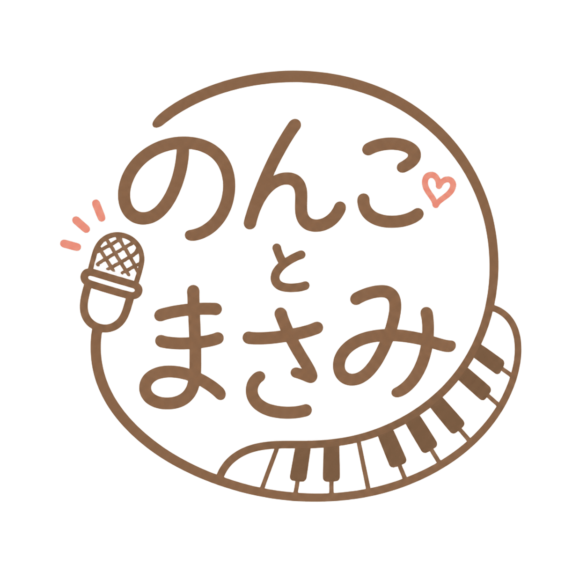
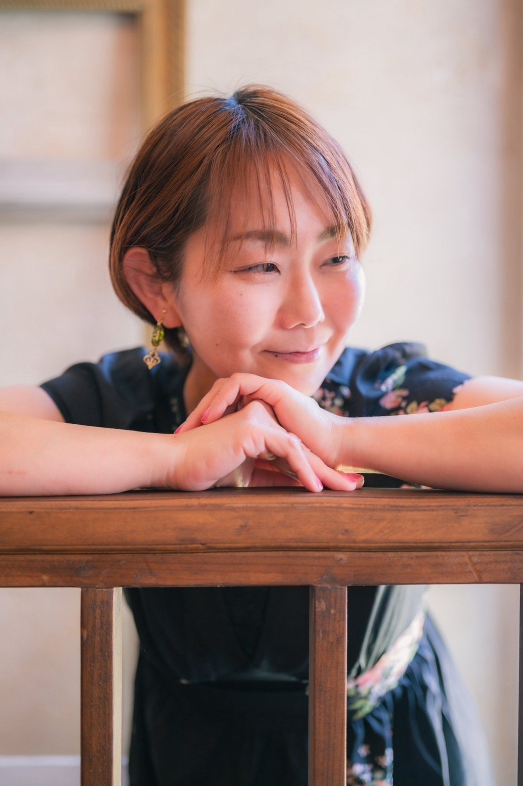

Nonko
Vocal
プロフィールは近日公開予定です。

おしゃれに、楽しく、ちょっとお茶目に。

ジャズを中心に、おしゃれに、楽しく、ちょっとお茶目に。
ヴォーカルとピアノでお届けする、心が弾む音楽と笑顔あふれるひととき。
聴いてくださる皆さまの日常に、ちょっとした彩りと元気をお届けします。
Vocal
プロフィールは近日公開予定です。
Piano
そがわ まさみ
4歳からピアノを始め、クラシックを原点に、ジャズやポピュラー音楽へと世界を広げる。
ジャズ好きの父の影響もあり、幼い頃から音楽はいつも日常のすぐそばに。
現在はfreelyピアノ教室を主宰しながら、ビッグバンドやライブなどで演奏活動を楽しんでいます。
ジャズピアノは、大好きで尊敬する寺村容子氏に師事。
いくつになっても学ぶこと、音楽を楽しむことに夢中です♪
一人で弾くピアノも好きだけれど、仲間と音を交わし、その場でしか生まれない音楽を楽しむ時間は格別♪
弾く人も、聴く人も、みんなが笑顔になれたら最高！😆
音楽と笑顔、そしてちょっぴり遊び心を忘れずに、今日も鍵盤に向かっています♪
ベーシストSeiを迎えたトリオ編成でも活動しています。
最新のライブ・イベント情報はInstagramでもお知らせしています。